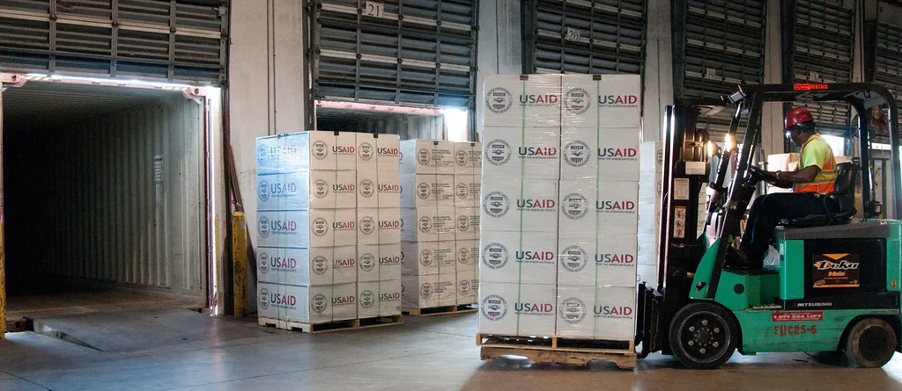

쿠팡, 공정위 현장조사 네 차례 거부…출범 후 첫 '빈손 철수'
공정거래위원회가 쿠팡에 대한 현장조사를 시도했다가 회사 측 거부로 결국 빈손으로 철수하는 초유의 사태가 벌어졌다. 대규모유통업법 관련 조사에서 조사 대상 기업의 거부로 현장조사 자체가 무산된 것은 공정위 출범 이후 처음 있는 일이다. 공정위와 국내 최대 이커머스 업체 간 정면 충돌이 규제 절차를 둘러싼 법적 공방으로까지 번지는 모양새다.
이번 조사는 쿠팡이 다른 쇼핑몰보다 가격이 비쌀 경우 자동으로 발행되는 할인 쿠폰의 비용을 납품업체에 부당하게 떠넘겼는지를 확인하기 위해 시작됐다. 쿠팡의 최저가 보장 시스템은 경쟁사 대비 가격이 높으면 소비자에게 자동으로 쿠폰을 지급해 가격 차이를 메우는 방식으로 운영되는데, 공정위는 이 쿠폰 비용의 부담 주체가 대규모유통업법이 정한 기준에 맞는지를 들여다보려 했다.

공정위는 지난 19일부터 21일까지 사흘, 그리고 24일까지 총 네 차례에 걸쳐 현장조사를 시도했지만 모두 성사되지 못했다. 쿠팡 측이 사전 통보를 받지 못했다는 이유를 들어 조사를 거부했기 때문이다. 결국 공정위는 24일 조사 현장에서 철수했고, 당초 이달 28일까지로 예정됐던 조사 일정도 나흘 앞당겨 조기 종료됐다. 조사 인력이 현장에 도착하고도 실제 조사에 착수하지 못한 채 발길을 돌린 것은 공정위 조사 역사에서도 이례적인 장면으로 꼽힌다.
양측의 주장은 정면으로 엇갈린다. 쿠팡은 현행 대규모유통업법상 조사를 시작하기 7일 전까지 조사 내용을 서면으로 미리 알려야 하는데 공정위가 이 절차를 지키지 않았다고 주장한다. 이를 근거로 쿠팡은 법원에 소송을 제기하는 한편, 조사를 막아달라는 집행정지도 함께 신청했다. 반면 공정위는 사전 통지를 하면 증거 인멸 우려가 있다고 판단될 경우 통지 없이 조사할 수 있도록 한 예외 조항에 따라 적법하게 절차를 진행했다는 입장이다.

쿠팡과 공정위의 갈등은 이번이 처음이 아니다. 공정위는 앞서 쿠팡의 검색순위 조작을 통한 소비자 기만행위에 과징금을 부과했고, 표시광고법 위반으로도 별도의 제재를 내린 바 있다. 대규모유통업법 위반과 관련해서도 납품업자에 대한 부당한 비용 전가 등을 이유로 시정명령과 함께 과징금을 부과한 전례가 있다. 이런 반복된 제재 이력 속에서 이번에는 쿠팡이 조사 자체를 정면으로 거부하고 나섰다는 점에서 갈등의 수위가 한층 높아졌다는 평가가 나온다.
시민단체들은 그간 공정위의 쿠팡 제재 수위가 기업 규모에 비해 미약하다고 지적해온 터라, 이번 조사 거부 사태를 계기로 온라인 플랫폼에 대한 규제를 강화해야 한다는 목소리도 커지고 있다. 일부 시민단체는 온라인 플랫폼의 시장 지배력에 견줘 현행 대규모유통업법만으로는 실효성 있는 제재가 어렵다며, 별도의 온라인 플랫폼 규제 법안 제정을 촉구해온 바 있다.
법원이 쿠팡이 신청한 집행정지를 어떻게 판단하느냐에 따라 향후 조사 재개 여부와 절차적 정당성 논쟁의 향방이 갈릴 전망이다. 만약 법원이 쿠팡의 손을 들어준다면 공정위의 조사 관행 자체를 재정비해야 하는 상황에 놓일 수 있고, 반대의 경우 쿠팡은 조사에 응해야 하는 부담을 안게 된다. 공정위와 쿠팡 간 법적 다툼이 어떤 결론에 이르든, 이번 사태는 대형 플랫폼 기업에 대한 정부 조사권의 실효성을 시험하는 사례로 남을 것으로 보인다.